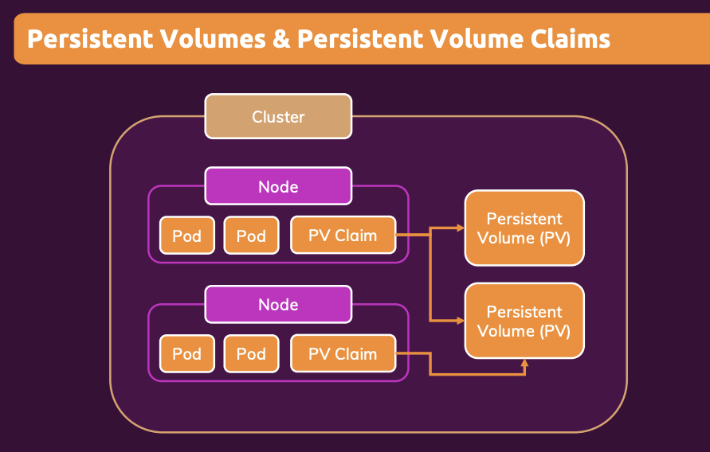

1. Kubernetes Introduction
1.1. Why do we need Kubernetes?
Kubernetes is an open-source system (not single library) for automating the deployment, scaling and management of containerised applications, independent of the specific cloud provider
Manual deployment of containers is hard to maintain and error-prone.
- Security and configuration concerns.
- Containers crash and need to be replaced. We don’t want to have to manually monitor this and intervene.
- Need to scale containers for traffic spikes.
- incoming traffic should be evenly distributed.
Services like ECS can help with some of these, such as replacing crashed containers and autoscaling. With a load balancer, it can distribute incoming traffic. But that locks us in to that cloud provider.
1.2. What is Kubernetes?
“K8s” is the de facto standard for container orchestration. It helps with tasks like automatic deployment, scaling and load balancing, and management.
We define the Kubernetes configuration which determines the desired architecture, number of containers etc. We can then pass this standardised, generic config to any cloud provider. We can also include config specific to a cloud provider without having to rewrite the entire config.
What isn’t Kubernetes?
- It isn’t an alternative to a cloud provider.
- It isn’t a specific service from a particular cloud provider.
- It isn’t a single piece of software, it’s a collection of tools and concepts.
Kubernetes is like Docker Compose but for multiple machines.
1.3. Cluster Architecture and Concepts

A pod holds one or more containers. It is the smallest unit in Kubernetes.
A pod runs on a worker node. A node is essentially a machine or virtual instance. Multiple pods can run on the same. Ode.
There is also a proxy on each worker node, which configures the network traffic.
Multiple pods can be created and removed to scale your app.
There is a a master node. This contains a Control Plane which handles the creation, removal and replacement of worker nodes. As a user, you don’t interact with the worker nodes directly. You define the desired end state and interact with the master node, which then handles the implementation.
The group of master nodes and all worker nodes is called a cluster. This then sends instructions to the cloud provider API to create all of the services required to realise the desired implementation.
Kubernetes does not manage your infrastructure for you. You still need to create the instances for the master node and worker nodes, and any other resources like load balancers and file systems. You also need to install kubelet and other Kubernetes services on those nodes yourself.
Many cloud providers have managed services to make this set up easier. But this is a service provided by the specific cloud providers, not natively by Kubernetes.
1.4. Worker nodes
Think of a worker node as one machine or virtual instance. What happens on the worker nodes (e.g. creating a pod) is managed by the master node.
The worker node contains one or more pods. Each pod hosts one or more application containers and their associated resources (such as volumes). Pods are created and managed by K8s via the master node.
The worker node can contain multiple pods.
Docker, kubelet and kube-proxyneed to be installed on the worker node.Kubelethandles the communication between the worker node and master node.Kube-proxyhandles the network communication.
1.5. Master node
The master node needs to run the API server. This is the counterpart to kubelet running on the worker nodes, and allows the master node to communicate with the workers.
There is a scheduler which watches the pods and selects worker nodes to run new pods on.
Kube-Controller-Manager watches the worker nodes and ensures the correct number of pods are running. There is also a Cloud-Controller-Manager which is the same thing but for a specific cloud provider.
Services are a group of pods with a unique IP address that can interact with the outside world.
2. Kubernetes in Action
2.1. Interacting with a Deployment Object
Minikube is a tool to make it easy to run Kubernetes locally, by running a cluster in a VM on your local machine.
You will need the kubectl tool installed. This gives commands to the master node, which in turn controls the worker nodes. Think of it like the president commanding the general to command his soldiers to attack.
Kubernetes works with Objects: pods, deployments, services, volumes, etc. Objects can be created imperatively or declaratively.
A pod has a cluster-internal IP address by default. Containers within a pod can communicate with each other via localhost.
Pods are ephemeral. When they are started, stopped or replaced, any local data is lost. Just like containers, which makes sense because they are just a thin wrapper around a container.
The Deployment object is what we interact with as users, not pods directly. You generally create a Deployment object which defines the desired target state. Then K8s will create the required pods and other objects. Deployments can be paused, deleted and rolled back. They can also be scaled (and auto-scaled).
On local machine, we send commands to the cluster. We create a deployment object with kubectl create. The image we specify needs to exist on the cluster, not the local machine that we are sending commands from. The image should be in a registry like DockerHub.
kubectl create deployment my-first-kube - -image=repo/my-docker-imageWe can see the status of the deployment with:
kubectl get deploymentsWe can see the status of pods with:
kubectl get podsIf we’re running locally, we can see our deployment with:
minikube dashboardWe can expose pods to the cluster or externally using a Service object. Pods have an internal IP address, but Services have a static IP address we can use to externally access it from anywhere.
We create a service by exposing a deployment:
kubectl expose deployment my-first-kube --type=LoadBalancer --port=8080We can see the service with:
kubectl get servicesExpose an external IP address when running locally with:
minikube service my-first-kubeTo manually scale a deployment object, we can set the number of replicas we want. We can scale up and down by setting the number of replicas higher or lower than it currently is.
kubectl scale deployment/my-first-kube --replicas=32.2. Updating Deployments
We can update the image in a deployment object by setting the new image. The new image should have a more recent tag, as this will trigger Kubernetes to download the newer image.
kubectl set image deployments/my-first-kube old-image-name=repo/new-image-nameWe can check the status of the updated deployment with:
kubectl rollout status deployment/my-first-kubeTo undo the latest deployment:
kubectl rollout undo deployment/my-first-kubeWe can see the rollout history with:
kubectl rollout history deployment/my-first-kubeThis will give a list of revisions. We can see details for a particular revision, say the 2nd revision, with:
kubectl rollout history deployment/my-first-kube --revision=2If we want to revert to a specific revision:
kubectl rollout undo deployment/my-first-kube - -to-revision=22.3. Imperative vs Declarative Approach
The imperative approach so far requires entering commands into the command line in the correct order. The declarative approach allows us to define the configuration which can then be reused.
It is analogous to how we could create docker containers in the command line (imperative), or define a docker-compose.yml file with all of the configuration and simply run this (declarative).
Once we have the configuration file defined, we just need to run:
kubectl apply -f config.yamlThis applies the config file to the connected cluster. If we change the config file, we can run the command again and Kubernetes will make the appropriate changes to get to the target state.
2.4. Kubernetes Config Files
These are the config files used in the declarative approach.
2.4.1. Defining a Deployment Object
apiVersion: apps/v1 # See K8sdocs for the latest version
kind: Deployment
metadata:
name: my-second-app
spec:
replicas: 3
# A selector is needed to specify which pods should be controlled by this deployment
selector:
matchLabels:
app: second-app
tier: backend
# As an alternative to matching labels, we can also match on an expression.
# Key is still referring to the key of a label
# Operator can be In, NotIn, Exist, DoesNotExist
matchExpressions:
- {key: app, operator: In, values: [second-app, first-app]}
template:
# Define the pod object.
# The template of a Deployment always defines a Pod, so you don’t need to (and can’t) specify kind: Pod
metadata:
labels:
# Key:Value can be whatever you like. It is used for the Deployment selector to identify the pod
app: second-app
tier: backend
spec:
containers:
# List of containers
- name: container1
image: repo/my-image-name:latest
# We can define a specific path and frequency for Kubernetes to check if this container is alive
livenessProbe:
httpGet:
path: /some/specific/path
port: 8080
periodSeconds: 10
initialDelaySeconds: 52.4.2. Defining a Service Object
apiVersion: v1
kind: Service
metadata:
name: backend
spec:
selector:
app: second-app
ports:
- protocol : TCP
port: 80
target port: 8080
type: LoadBalancerWe apply the config the same way, with kubectl apply.
We can delete all of the resources that were created by a particular config file using
kubectl delete -f=deployment.yaml We can also delete by label. You should pass the kinds of objects (e.g. deployments, services) that you want to delete.
kubectl delete deployments -l key=value2.4.3. Multiple Configs
If you have multiple configurations, such as a Service and a Deployment, you can put them all in one file. Just separate each section with three dashes ---
The objects will be created top to bottom. It’s best practice to put the service before the deployment since it references the pods created later. The service will “watch” for any pods created which match its selector.
Some other parameters of the deployment config that may be helpful:
imagePullPolicy- we can set this to always pull the latest image, even if we don’t explicitly specify a tag.livenessProbe- how Kubernetes should check the health of the container. Is there a specific path to send a request to?
3. Managing Data and Volumes
We are still working with containers in Kubernetes, so the concept of Docker volumes is still relevant. It is still solving the same problem, namely that we want persisted data to survive a container stoppage or restart.
But Kubernetes manages our containers for us, so we can’t manually add a volume in the same way we did with Docker. We need a Kubernetes-specific way to add volumes.
3.1. Kubernetes Volumes
Kubernetes supports a variety of types/drivers of volumes: local volumes (on nodes) or cloud-provider specific volumes. This is extra functionality added by Kubernetes, not supported by plain Docker.
The lifetime of the volume depends on the lifetime of its pod. The volume survives container restarts, but not pod deletion.
We define the volumes inside the pod specification in the yaml file. We also need to specify which containers are linked to which pods using the volumeMounts key.
3.1.1. The emptyDir Volume Type
The emptyDir volume type creates a new empty directory when the pod starts. It keeps the directory alive as long as the pod is alive. Containers can write to this directory. It will survive container restarts but not pod restarts.
Under the spec key:
spec:
containers:
- name
…
volumeMounts:
- mountPath: /app/story
name: story-volume
volumes:
- name: my-first-volume
# We specify the TYPE of volume
emptyDir: {}
# We create a host path volume at a specific location on the host machine. Create the directory if it doesn’t already exist
hostPath:
path: /data
type: DirectoryOrCreate3.1.2. The hostPath Volume Type
The hostPath volume type creates a folder on the host machine. It is a bit like a bind mount in Docker. We could use it if we wanted to share some existing data.
The host path volume is node-specific, so won’t share data across replicas on different machines.
3.1.3. The CSI Volume Type
The Container Storage Interface (CSI) volume type is a generic interface that different cloud providers are compatible with. Different cloud providers then integrate with this, so we can plug into AWS, GCP, Azure etc, or build our own integration.
3.2. Persistent Volumes
The previous volume types do not scale to multiple pods. If we replicate our pods over multiple machines, they won’t share data. “Normal” volumes are node-independent but not pod-independent. The data is lost if the whole node is removed.
Persistent volumes are pod-independent and node-independent. This is appropriate for long-term data. The volume is detached from the pod, including being detached from the pod lifecycle. We define the persistent volumes once, and can then use it across multiple deployments. The data will survive the pod or node being removed.
The storage is not on the nodes, it is in the cloud storage.

3.2.1 Defining a Persistent Volume
In a new file, say pv.yaml, we can define the persistent volume.
apiVersion: c1
kind: PersistentVolume
metadata:
name: my-pv
spec:
capacity:
storage: 4Gi
# We can use block storage or file system storage
volumeMode: Filesystem
# Kubernetes lets you define different storage classes, but by default gives you the standard class
storageClassName: standard
# How many nodes (one or many) can claim this volume, and can they write or only read?
accessModes:
- ReadWriteOnce
- ReadOnlyMany
- ReadWriteMany
hostPath:
path: /data
type: DirectoryOrCreate3.2.2. Creating a Persistent Volume Claim
We configure a claim in a new yaml file, then we can assign this claim to a pod so that it claims the persistent volumes.
apiVersion: v1
kind: PersistentVolume
metadata:
name: my-pv-claim
spec:
# Static provisioning is when we specify the exact volume to claim by name
# We can also do dynamic provisioning where we specify the required properties of the volume and Kubernetes will find an appropriate volume in our cluster
volumeName: my-pv
accessModes:
- ReadWriteOnce
storageClassName: standard
# How much storage will this claim use?
resources:
requests:
storage: 1GiWe can then assign this claim to a pod under the volumes key of the pod spec:
volumes:
- name: my-persistent-volume
persistentVolumeClaim:
claimName: my-pv-claimThen we can use kubectl to apply each of the updated yaml files to our cluster.
We can see the persistent volumes and claims currently running by using:
kubectl get pv
kubectl get pvc3.3. Environment Variables
3.3.1. Using Environment Variables
Under the container key of a pod specification, you can add an env key with a list of key-value pairs.
containers:
env:
- name: STORY_FOLDER
value: “story”You can then use this env variable in your app.
3.3.2. Using an Environment File
We can store environment variables in another yaml file of kind ConfigMap. This can then be reused across multiple pods and deployments.
In a file environment.yaml:
apiVersion: v1
kind: ConfigMap
metadata:
name: data-store-env
data:
folder: “story”Then we can point to that file in our deployment.yaml file.
containers:
env:
- name: STORY_FOLDER
# We can refer to a ConfigMap
valueFrom:
configMapKeyRef:
name: data-store-env
# Which key to we want to pull out of the env file to use as the STORY_FOLDER value?
key: folderSee this blog post for storing secrets: https://phoenixnap.com/kb/kubernetes-secrets
4. Networking
4.1. Pod-Internal Communication
For containers in the same pod, we can use localhost to communicate between the pods. We need to expose the port of the container when creating the Dockerfile. This is similar to internal communication between containers when using docker compose.
4.2. Pod-to-Pod Communication
4.2.1. Using IP address
For pods in the same cluster, we can create a service with type=ClusterIP. We would need to get the IP address of the service and use this in our code. Kubernetes has a convenient environment variable to save the leg work here. If we have a service called “auth-service”, for example, it will automatically create an environment variable called AUTH_SERVICE_SERVICE_HOST. So we can use this in place of the IP address in our code.
4.2.2 Using DNS
You can also pass the name of the service as the URL. We also need to suffix it with the namespace, which is “default” by default.
E.g. auth-service.default
This is automatically generated by Kubernetes.
4.2.3 Best Practices
You should normally have different containers in different pods, unless they are very tightly coupled together.
So we need to create a service per pod to allow them to communicate. The DNS approach is the most common method, rather than the IP address environment variable.
4.3. Communicating with the Outside World
Create a service with type=LoadBalancer.
5. Kubernetes Deployments
5.1. Deployment Options
There are several approaches:
- Deploy on your own data centre
- Deploy manually on a cloud provider. Tools like
kopscan help make this more straightforward. - Use a managed service from a cloud provider like AWS EKS.
5.2. AWS EKS
This is Elastic Kubernetes Service. It is analogous to how we used Elastic Container Service (ECS) when using plain Docker containers.
We use the UI to create an EKS cluster.
- We need to give EKS permissions to create new resources, e.g. EC2 instances, EFS storage, etc. In IAM, create a new role with appropriate permissions.
- We also need to create a network for our EKS cluster. We can do this using a template in CloudFormation.
On our computer from which we issue kubectl commands, we want it to be able to talk to the EKS cluster. Whether using EKS or not, this is configured in a config file on your machine located at User/.kube/config
You can update this to speak to EKS. The most straightforward way to update this is using the AWS CLI. We’ll need to create an access key in IAM for this.
Run aws configure to set up the CLI to be able to make changes on your machine.
Then run
aws eks --region us-east-2 update-kubeconfig --name my-cluster-name5.2.1. Add Worker Nodes
In the EKS console, click Add Node Group. We again need to assign an appropriate role to these worker nodes so that they can write log files, connect to other services, etc.
We attach an IAM role for this. Relevant policies are EKSWorkerNode, CNI_Policy, EC2ContainerRegistryPolicy
5.2.2. Adding a Volume
We can add EFS storage as a volume. We make the persistent volume type=CSI.
There are third party libraries that make the interface easier to deal with, e.g. aws-efs-csi-driver is an open source package to make it simple to deal with. If using this, you will also need to add a section to your volume’s config.yaml to define the new storage class that this provides. The snippet can be copied from the driver’s repo.
In the EC2 section, create a security group that has inbound NFS connections allowed with the IPv4 CIDR of our VPC.
Now in EFS, we can click Create File System. Make sure it’s in the same VPC. Under customise, remove the default security groups and add the new security groups created previously.
Then the usual K8s process of creating a persistent volume config, a claim config, and assigning the claim to a pod.
References
- “Docker & Kubernetes: The Practical Guide” Udemy course
- Architecture diagram
- Storing secrets